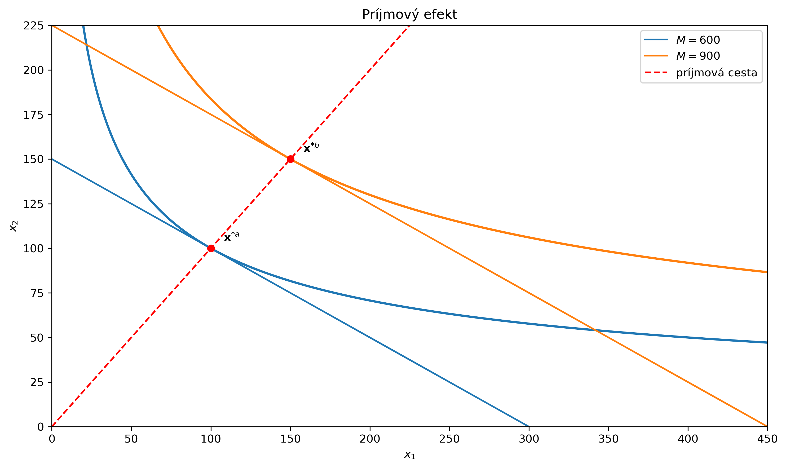
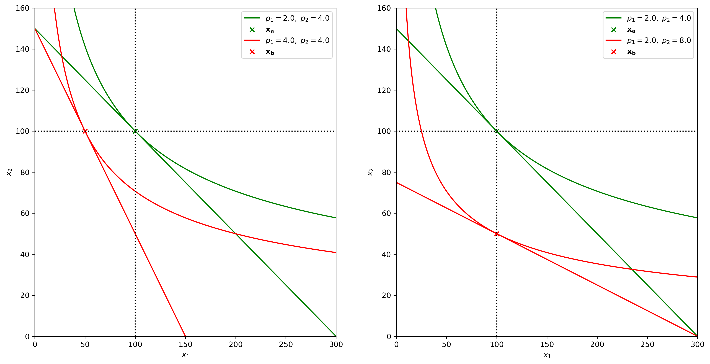
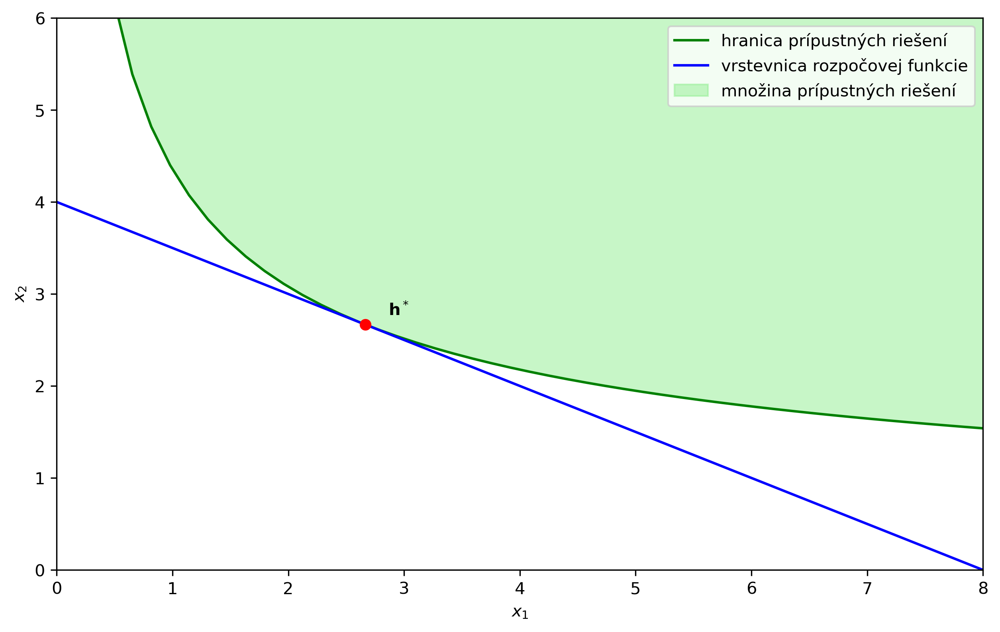
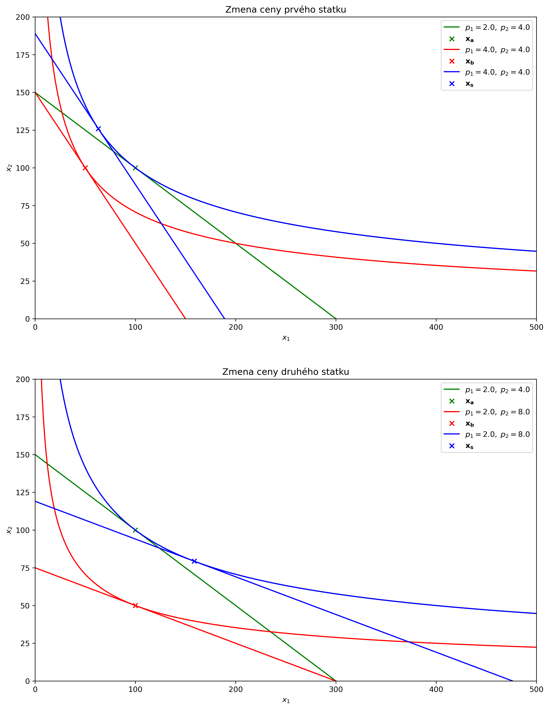
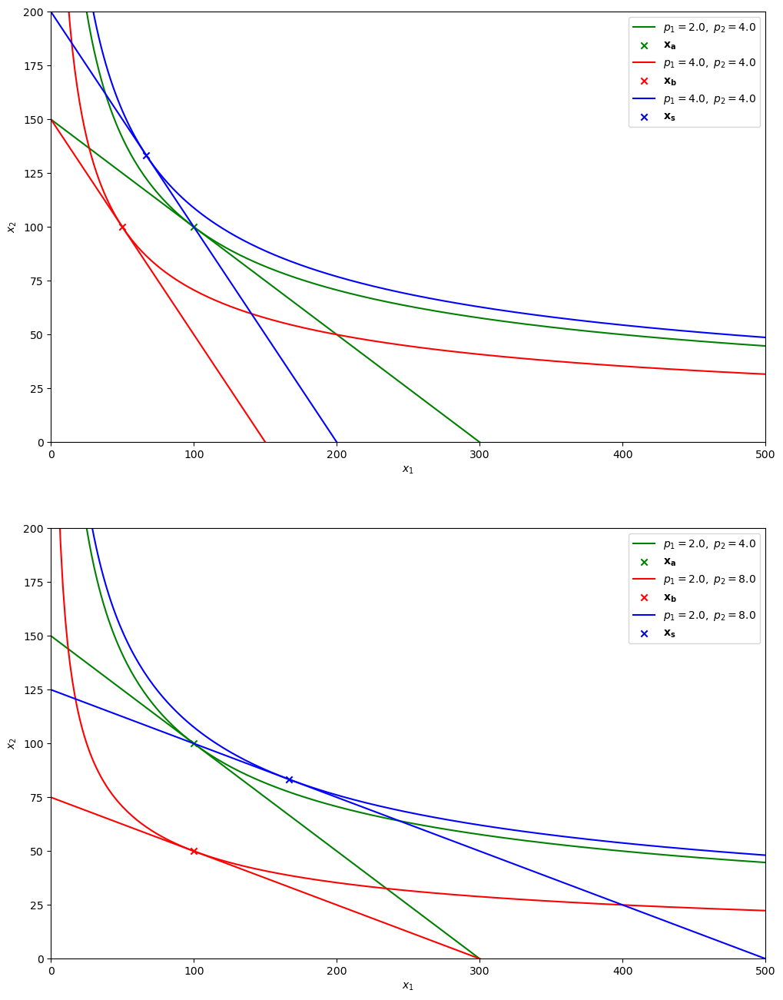
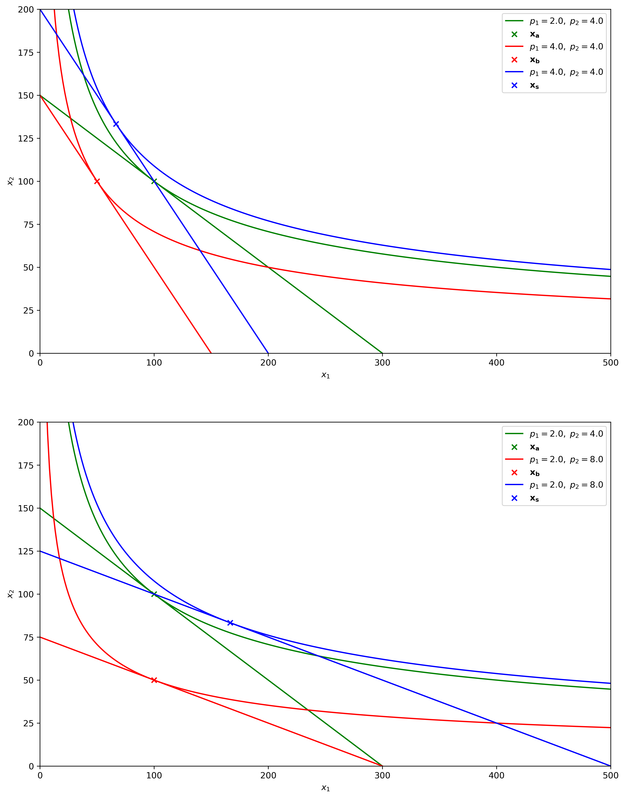

6. Dopyt spotrebiteľa#
6.1. Marshallove dopytové funkcie#
Správanie spotrebiteľa sme opísali úlohou na viazaný extrém, v ktorej spotrebiteľ výberom spotreby \(\mathbf{x}\) maximalizuje (5.6) vzhľadom na spotrebiteľov rozpočet (5.7) pri nezápornosti rozhodovacích premenných (5.8). V ďalšom texte budeme túto úlohu nazývať aj Marshallova úloha.
- Marshallova úloha
spotrebiteľova úloha maximilizovať užitočnosť (5.6) vzhľadom na rozpočet (5.7) a (5.8)
Podmienky prvého rádu úlohy sú (5.9) a (5.10).
Riešením úlohy maximalizácie užitočnosti alebo ekvivalentne riešením podmienok prvého rádu získame redukovaný tvar úlohy.
- Marshallove dopytové funkcie
Marshallove dopytové funkcie vyjadrujú spotrebiteľov dopyt po jednotlivých statkoch v závislosti od rozpočtu spotrebiteľa a cien statkov.
Komparatívna statika ako sa mení optimálny spotrebiteľský kôš pri zmenách rozpočtu spotrebiteľa a cien statkov.
6.2. Vplyv zmeny rozpočtu na spotrebu statkov#
Ako sa zmení spotreba statkov, ak sa spotrebiteľovi zmení rozpočet, {ref}(cp-label)?
Statok je normálny, ak sa zvyšením príjmu, ceteris paribus, nezníži jeho spotreba,
Statok je podradný, ak sa zvyšením príjmu, ceteris paribus, zníži jeho spotreba,
Ak uvažujeme o normálnmych statkoch, možno ich klasifikovať podľa príjmovej elasticity (Elasticita)
statok je luxusný, ak
statok je nevyhnutný (základný), ak
statok je zberateľský, ak
Spotreba zberateľských statkov sa mení rovnakým pomerom ako sa mení spotrebiteľov rozpočet, ceteris paribus.
Statky s jednotkovou príjmovou elasticitou sa v slovenskej mikroekonomickej literatúre často označujú ako zberateľské statky.
Na Obr. 6.1 sú oba statky normálne a zberateľské.

Obr. 6.1 Vplyv zvýšenia rozpočtu na správanie spotrebiteľa#
Klasifikácia statkov podľa reakcie spotreby na zmenu rozpočtu
Typ statku |
Podmienka |
|---|---|
normálny |
\(\displaystyle \frac{\partial x_i(M,\mathbf{p})}{\partial M}\ge 0\) |
podradný |
\(\displaystyle \frac{\partial x_i(M,\mathbf{p})}{\partial M}<0\) |
luxusný |
\(\displaystyle \varepsilon_M>1\) |
zberateľský |
\(\displaystyle \varepsilon_M=1\) |
nevyhnutný (základný) |
\(\displaystyle 0<\varepsilon_M<1\) |
6.3. Vplyv zmeny cien na spotrebu statkov#
Ako sa zmení spotrebiteľova spotreba statkov, ak sa zmení cena niektorého zo statkov, Ceteris paribus?
Rozlišujme vplyv zmeny vlastnej ceny a krížovej ceny.
- Vplyv zmeny vlastnej ceny
Zaujíma nás, ako sa zmení spotrebiteľovi spotreba statku, ak sa jeho cena zmení, ceteris paribus.
- Vplyv zmeny krížovej ceny
Zaujíma nás, ako sa zmení spotrebiteľovi spotreba statku, ak sa zmení cena iného statku, ceteris paribus.
Statok je štandardný, ak sa zvyšením jeho ceny, ceteris paribus, jeho spotreba nezvýši,
Statok je Giffenov, ak sa zvyšením jeho ceny, ceteris paribus, jeho spotreba zvýši,
Dva statky sú substitúty, ak sa zvýšením ceny jedného, ceteris paribus, zvýši spotreba druhého (cukor, med),
Dva statky sú komplementárne, ak sa zvýšením ceny jedného, ceteris paribus, zníži spotreba druhého (benzín, automobil),
Ak uvažujeme o štandardných statkoch, možno ich klasifikovať podľa cenovej elasticity (Elasticita)
statok je elastický, ak
statok je neelastický, ak
statok je jednotkovo-elastický, ak
Na Obr. 6.2 sú oba statky štandardné. Krížové cenové efekty sú nulové, preto statky nie sú ani substitúty, ani komplementy.

Obr. 6.2 Vplyv zvýšenia ceny na správanie spotrebiteľa#
Typ statku |
Podmienka |
|---|---|
štandardný |
\(\displaystyle \frac{\partial x_i(M,\mathbf{p})}{\partial p_i}\le 0\) |
Giffenov |
\(\displaystyle \frac{\partial x_i(M,\mathbf{p})}{\partial p_i}>0\) |
substitút |
\(\displaystyle \frac{\partial x_i(M,\mathbf{p})}{\partial p_j}>0,\quad i\neq j\) |
komplement |
\(\displaystyle \frac{\partial x_i(M,\mathbf{p})}{\partial p_j}<0,\quad i\neq j\) |
nezávislý statok |
\(\displaystyle \frac{\partial x_i(M,\mathbf{p})}{\partial p_j}=0,\quad i\neq j\) |
Marshallove dopytové funkcie opisujú optimálne rozhodnutie spotrebiteľa pri danom rozpočte.
Pri zmene ceny statku sa však súčasne menia:
relatívne ceny statkov,
kúpna sila spotrebiteľa.
Z celkovej zmeny spotreby preto nie je možné priamo určiť, aká časť zmeny je spôsobená zmenou relatívnych cien a aká časť zmenou kúpnej sily spotrebiteľa.
Ako oddeliť tieto dva vplyvy?
V Príklad: Marshallove dopytové funkcie odvodíme Marshallove dopytové funkcie dvoch statkov (6.13) spotrebiteľa s preferenciami opísanými Cobbovou-Douglasovou funkciou užitočnosti s konštatntnými výnosmi z rozsahu ().
S danými preferenciami, dva statky (Príklad: Komparatívna statika)
sú normálne a zberateľské; príjmové elasticity spotreby sa rovnajú 1,
sú štandardné a jednotkovo-elastické,
nie sú ani substitúty ani komplementy.
6.4. Hicksove dopytové funkcie#
Doteraz sme správanie spotrebiteľa opisovali ako úlohu maximalizácie užitočnosti (5.6) pri danom rozpočte (5.7).
Rovnaké rozhodovanie možno opísať aj opačne.
Predpokladajme, že spotrebiteľ požaduje dosiahnuť úroveň užitočnosti \(\bar u\). Ktorý spotrebiteľský kôš mu umožní dosiahnuť túto úroveň užitočnosti pri minimálnych výdavkoch?
Takúto úlohu spotrebiteľa zapíšeme v tvare
vzhľadom na ohraničenie
a nezápornosť rozhodovacích premenných
Na Obr. 6.3 je znázornená úloha minimalizácie výdavkov spotrebiteľa.
Zelená krivka predstavuje hranicu prípustných riešení, teda všetky spotrebiteľské koše poskytujúce požadovanú úroveň užitočnosti \(\bar u\).
Modrá priamka predstavuje vrstevnicu výdavkovej (rozpočtovej) funkcie. Každý bod na nej vyžaduje rovnaké výdavky.
Optimálny spotrebiteľský kôš \(\mathbf{h}^*\) vzniká v bode dotyku hranice prípustných riešení a vrstevnice výdavkovej funkcie.
V tomto bode sú minimálne výdavky potrebné na dosiahnutie úrovne užitočnosti \(\bar u\).

Obr. 6.3 Hicksova úloha minimalizácie užitočnosti vzhľadom na pevný rozpočet#
Ak optimálny spotrebiteľský kôš leží vo vnútri definičného oboru, potom platia podmienky prvého rádu.
Optimálny spotrebiteľský kôš leží na hranici prípustných riešení
Hraničná miera spotrebiteľskej substitúcie sa rovná pomeru cien statkov
Podmienka prvého rádu (6.8) sa zhoduje s podmienkou Marshallovej úlohy (6.1). Rozdiel dvoch úloh spočíva v interpretácii.
V Marshallovej úlohe (Marshallova úloha) hľadáme najvyššiu dosiahnuteľnú úroveň užitočnosti pri danom rozpočte.
V Hicksovej úlohe (Hicksova úloha) hľadáme najnižšie výdavky potrebné na dosiahnutie danej úrovne užitočnosti.
Riešením úlohy minimalizácie výdavkov získame redukovaný tvar úlohy.
- Hicksove dopytové funkcie
Redukovaný tvar modelu úlohy (6.4), (6.5) a (6.6).
Hicksove dopytové funkcie vyjadrujú spotrebiteľov dopyt po jednotlivých statkoch v závislosti od jeho požadovaného blahobytu a cien statkov.
Pre odvodenie Hicksových dopytových funkcií s preferenciami () pozri Príklad: Hicksove dopytové funkcie.
6.5. Výdavková funkcia#
Dosadením Hicksových dopytových funkcií do výdavkov spotrebiteľa získame výdavkovú funkciu.
- Výdavková funkcia
Optimálna hodnota účelovej funkcie (6.4).
Výdavková funkcia vyjadruje minimálne výdavky potrebné na dosiahnutie úrovne užitočnosti \(\bar u\) pri daných cenách statkov.
6.6. Vzťah medzi Marshallovými a Hicksovými dopytovými funkciami#
Marshallove dopytové funkcie (6.1) vyjadrujú optimálny spotrebiteľský kôš pri danom rozpočte a cenách statkov.
Hicksove dopytové funkcie (6.9) vyjadrujú najlacnejší spotrebiteľský kôš, ktorý umožňuje dosiahnuť úroveň užitočnosti \(\bar u\) pri daných cenách statkov.
V úlohe (5.6), (5.7) a (5.8) (Marshall) je daný rozpočet a výsledkom je dosiahnutá úroveň užitočnosti. V úlohe (6.4), (6.5) a (6.6) (Hicks) je daná úroveň užitočnosti a výsledkom sú minimálne výdavky potrebné na jej dosiahnutie.
Dosadením Marshallových dopytových funkcií pri rozpočte \(M\) do funkcie užitočnosti získame úroveň užitočnosti
Potom Hicksove dopytové funkcie pri tejto úrovni užitočnosti vedú k rovnakému optimálnemu spotrebiteľskému košu
Naopak, ak pri úrovni užitočnosti \(\bar u\) označíme minimálne výdavky
potom Marshallove dopytové funkcie vedú k rovnakému optimálnemu spotrebiteľskému košu
Marshallove a Hicksove dopytové funkcie preto opisujú rovnaké správanie spotrebiteľa z dvoch rôznych pohľadov.
Marshallove dopytové funkcie sú vhodné na analýzu správania spotrebiteľa pri danom rozpočte. Hicksove dopytové funkcie umožňujú analyzovať správanie spotrebiteľa pri nezmenenej úrovni užitočnosti, čo je základom rozkladu vplyvu zmeny ceny na substitučný a príjmový efekt.
6.7. Rozklad vplyvu zmeny ceny#
Uvažujme ďalej o dvoch štandardných a normálnych statkoch.
Ak sa cena jedného statku zvýši, jeho spotreba klesne, pretože ide o štandardný statok. Ako sa však zmení spotreba druhého statku?
Vieme, že ak sa spotreba druhého statku zvýši, oba statky sú substitúty. Ak sa spotreba druhého statku zníži, oba statky sú komplementy.
Celkový vplyv zmeny ceny možno rozdeliť na príjmový a substitučný efekt.
Ak sa zvýši cena jedného zo statkov, spotrebiteľovi klesne reálny príjem. Peňažný rozpočet spotrebiteľa sa síce nezmení, ale za rovnaký rozpočet si už nemôže dovoliť niektoré spotrebiteľské koše, ktoré si mohol dovoliť pred zvýšením ceny.
Pri normálnych statkoch vedie pokles reálneho príjmu k poklesu spotreby oboch statkov. Tento vplyv nazývame príjmový efekt.
Zároveň sa zmení pomer cien statkov. Statok, ktorého cena sa zvýšila, sa stáva relatívne drahším a druhý statok relatívne lacnejším.
Substitučným efektom spotrebiteľ reaguje na zmenu relatívnych cien tak, že znižuje spotrebu relatívne drahšieho statku a zvyšuje spotrebu relatívne lacnejšieho statku.
Z uvedeného vyplýva, že zvýšenie ceny jedného zo statkov spôsobí:
príjmovým efektom pokles spotreby oboch statkov,
substitučným efektom pokles spotreby statku, ktorého cena sa zvýšila, a rast spotreby druhého statku.
Celkový efekt je súčtom príjmového a substitučného efektu.
Spotreba statku, ktorého cena sa zvýšila, klesá príjmovým aj substitučným efektom. Celkovým efektom zvýšenia ceny je preto pokles spotreby tohto statku.
Pri druhom statku pôsobia oba efekty opačným smerom. Príjmový efekt znižuje jeho spotrebu, zatiaľ čo substitučný efekt ju zvyšuje.
Preto:
ak sa spotreba druhého statku zvýši, substitučný efekt prevláda nad príjmovým efektom a oba statky sú substitúty,
ak sa spotreba druhého statku zníži, príjmový efekt prevláda nad substitučným efektom a oba statky sú komplementy,
ak sa spotreba druhého statku nezmení, príjmový a substitučný efekt sa navzájom vykompenzujú.
6.8. Hicksova interpretácia príjmového a substitučného efektu#
V predchádzajúcej časti sme ukázali, že zmena ceny statku ovplyvňuje spotrebu prostredníctvom príjmového a substitučného efektu.
Pri pozorovaní zmeny Marshallových dopytových funkcií však vidíme iba celkový efekt zmeny ceny. Samotné Marshallove dopytové funkcie neumožňujú určiť, aká časť zmeny spotreby bola spôsobená zmenou relatívnych cien a aká časť zmenou reálneho príjmu spotrebiteľa.
Na oddelenie oboch efektov využijeme Hicksove dopytové funkcie.
- Hicksova interpretácia príjmového a substitučného efektu
Rozklad celkového efektu zmeny ceny na substitučný a príjmový efekt pri nezmenenej úrovni užitočnosti spotrebiteľa.
Predpokladajme, že sa zvýši cena prvého statku \(p_1\).
Pôvodný optimálny spotrebiteľský kôš je \(\mathbf{x_a}\).
Po zvýšení ceny sa zmení sklon hranice spotrebiteľských možností \(p_1/p_2\) a nový optimálny spotrebiteľský kôš je \(\mathbf{x_b}\).
Táto zmena predstavuje celkový efekt zmeny ceny.
Aby sme oddelili substitučný efekt od príjmového efektu, kompenzujeme spotrebiteľovi zvýšenie ceny tak, aby zostal na pôvodnej úrovni užitočnosti. Napríklad mu vláda poskytne dodatočný príjem kompenzujúci zvýšenie ceny. Tým sa podľa Hicksovej koncepcie eliminuje príjmový efekt.
Pri tejto kompenzácii spotrebiteľ zvolí nový optimálny spotrebiteľský kôš \(\mathbf{x_s}\).
Presun z bodu \(\mathbf{x_a}\) do bodu \(\mathbf{x_s}\) predstavuje substitučný efekt.
Presun z bodu \(\mathbf{x_s}\) do bodu \(\mathbf{x_b}\) predstavuje príjmový efekt.
Na Obr. 6.4 je v hornom paneli zobrazený rozklad celkového efektu zmeny ceny prvého statku na substitučný a príjmový efekt.
V dolnom paneli je zobrazený rozklad celkového efektu zmeny ceny druhého statku.
Pôvodný optimálny spotrebiteľský kôš \(\mathbf{x_a}\) je zobrazený zelenou farbou.
Nový optimálny spotrebiteľský kôš \(\mathbf{x_b}\) je zobrazený červenou farbou.
Elimináciu príjmového efektu kompenzáciou zvýšenia ceny predstavuje posun červenej hranice spotrebiteľských možností do modrej. Modrá hranica spotrebiteľských možností je rovnobežná s červenou hranicou, pretože obe zodpovedajú rovnakému pomeru cien \(p_1/p_2\).
Hranica spotrebiteľských možností sa posúva dovtedy, kým sa nedotkne pôvodnej indiferenčnej krivky, ktorá predstavuje pôvodnú úroveň užitočnosti spotrebiteľa.
Bod dotyku \(\mathbf{x_s}\) je zobrazený modrou farbou. Presun z bodu \(\mathbf{x_a}\) do bodu \(\mathbf{x_s}\) predstavuje substitučný efekt. Presun z bodu \(\mathbf{x_s}\) do bodu \(\mathbf{x_b}\) predstavuje príjmový efekt.

Obr. 6.4 Rozklad celkového efektu zmeny ceny na substitučný a príjmový podľa Hicksovej koncepcie#
6.9. Hicksov rozklad cenového efektu#
Označme Marshallov dopyt po statku \(i\) ako \(x_i(M,\mathbf p)\) a Hicksov dopyt \(h_i(\bar u,\mathbf p)\).
Pri zmene ceny statku \(p_j\) možno celkový efekt rozdeliť na:
substitučný efekt,
príjmový efekt.
Substitučný efekt zachytáva zmenu Hicksovho dopytu
Celkový efekt zachytáva zmenu Marshallovho dopytu
Príjmový efekt vzniká preto, že zmena ceny mení reálny rozpočet spotrebiteľa.
Ak sa zmení cena statku \(j\), rozpočet potrebný na kúpu pôvodného spotrebiteľského koša sa zmení o
Vplyv tejto zmeny rozpočtu na spotrebu statku \(i\) je
Keďže
dostávame
6.10. Slutského rovnica#
Celkový efekt zmeny ceny sa rovná súčtu substitučného a príjmového efektu.
Ak \(i=j\), rovnica (6.11) opisuje rozklad vlastného cenového efektu.
Ak \(i\neq j\), rovnica (6.11) opisuje rozklad krížového cenového efektu.
Ľavá strana (6.11) predstavuje celkový efekt zmeny ceny.
Prvý člen na pravej strane (6.11) predstavuje substitučný efekt.
Druhý člen na pravej strane (6.11) predstavuje príjmový efekt.
Pri zvýšení ceny statku sa spotrebiteľ snaží nahradiť relatívne drahší statok relatívne lacnejšími statkami. Tento vplyv vyjadruje substitučný efekt.
Súčasne sa znižuje reálna hodnota jeho rozpočtu. Tento vplyv vyjadruje príjmový efekt.
Hicksova koncepcia poskytuje ekonomickú interpretáciu substitučného efektu. Slutského rovnica umožňuje substitučný efekt vypočítať priamo z Marshallových dopytových funkcií bez riešenia Hicksovho problému.
6.11. Slutského rozklad celkového efektu na príjmový a substitučný#
Alternatívou Hicksovej kompenzácie je Slutského kompenzácia, ktorá zachováva schopnosť kúpiť pôvodný optimálny spotrebiteľský kôš.
Na Obr. 6.5 to znamená kompenzáciu rozpočtu až do bodu, v ktorom hranica spotrebiteľských možností prechádza pôvodným optimálnym spotrebiteľským košom.
Slutského kompenzácia zachováva pri eliminácii príjmového efektu spotrebiteľovu kúpnu silu spotrebiteľa, zatiaľ čo Hicksova kompenzácia zachováva jeho úroveň užitočnosti.
V ďalšom texte budeme používať predovšetkým Hicksovu koncepciu.


Obr. 6.5 Rozklad celkového efektu zmeny ceny na substitučný a príjmový podľa Slutského koncepcie#
6.12. Riešené príklady#
Pri práci s Pythonom využijeme knižnice:
from sympy import symbols, diff, solve, simplify, sqrt
6.12.1. Príklad: Marshallove dopytové funkcie#
Spotrebiteľove preferencie charakterizuje funkcia užitočnosti v tvare:
Odvoďte Marshallove dopytové funkcie.
6.12.1.1. Riešenie#
Podmienky prvého rádu (5.9) a (5.10) zapíšeme v tvare
a
Po úprave ľavej strany získame
Po úprave
Dosadením do rozpočtového ohraničenia
získame
Keďže
platí
Dopyt po prvom statku je preto
Dosadením do rozpočtového obmedzenia získame dopyt po druhom statku
Marshallove dopytové funkcie sú
Spotrebiteľ vynakladá podiel \(\alpha\) svojho rozpočtu na prvý statok a podiel \(1-\alpha\) na druhý statok.
6.12.1.2. Python#
x1,x2,p1,p2,M,alpha = symbols('x1,x2,p1,p2,M,alpha',Positive=True)
u = x1**alpha * x2**(1-alpha) # funkcia užitočnosti všeobecne
# podmienky prvého rádu všeobecne
ppr = [diff(u,x1)/diff(u,x2)-p1/p2,
p1*x1 + p2*x2 - M]
x = solve(ppr,[x1,x2],dict=True)
x = x[0] if type(x) is list else x
print("Marshallové dopytové funkcie", x)
Marshallové dopytové funkcie {x1: M*alpha/p1, x2: M*(1 - alpha)/p2}
6.12.2. Príklad: Komparatívna statika#
Rozhodnite, či v statky z Príklad: Marshallove dopytové funkcie sú
normálne alebo podradné,
štandardné alebo Giffenove.
Vyjadrite príjmové elasticity spotreby.
Vyjadrite cenové elasticity spotreby.
6.12.2.1. Riešenie#
Marshallove dopytové funkcie z Príklad: Marshallove dopytové funkcie sú
1. Normálne alebo podradné statky
Parciálne derivácie podľa rozpočtu sú
Oba statky sú preto normálne.
2. Štandardné alebo Giffenove statky
Parciálne derivácie podľa vlastných cien sú
Oba statky sú preto štandardné.
3. Príjmové elasticity spotreby
Pre prvý statok
Pre druhý statok
Príjmová elasticita oboch statkov sa rovná jednej. Oba statky sú zberateľské.
4. Cenové elasticity spotreby
Pre prvý statok
Pre druhý statok
Oba statky sú preto jednotkovo elastické. Napokon
Statky preto nie sú ani substitúty, ani komplementy.
6.12.2.2. Python#
print("Vplyv príjmu na spotrebu ")
print("Príjmový multiplikátor spotreby prvého statku je",diff(x[x1],M),"> 0;")
print("Príjmový multiplikátor spotreby druhého statku je", diff(x[x2],M),"> 0;")
print( "Statky sú normálne.")
print("Príjmová elasticita spotreby prvého statku je", diff(x[x1],M)*M/x[x1])
print("Príjmová elasticita spotreby druhého statku je",diff(x[x2],M)*M/x[x2])
print( "Statky sú zberateľské.")
print()
print("Vplyv ceny prvého statku na spotrebu ")
print("Vlastný cenový multiplikátor spotreby prvého statku je",diff(x[x1],p1),"< 0;")
print("Krížový cenový multiplikátor spotreby druhého statku je", diff(x[x2],p1))
print("Prvý statok je štandardný, statky nie sú substitúty ani komplementárne")
print("Vlastná cenová elasticita spotreby prvého statku je", diff(x[x1],p1)*p1/x[x1])
print("Krížová cenová elasticita spotreby druhého statku je",diff(x[x2],p1)*p1/x[x2])
print("Dopyt prvého statku je jednotkovo elastický")
print()
print("Vplyv ceny druhého statku na spotrebu ")
print("Krížový cenový multiplikátor spotreby prvého statku je",diff(x[x1],p2))
print("Vlastný cenový multiplikátor spotreby druhého statku je", diff(x[x2],p2),"< 0;")
print("Druhý statok je štandardný.")
print("Krížová cenová elasticita spotreby prvého statku je", diff(x[x1],p2)*p2/x[x1])
print("Vlastná cenová elasticita spotreby druhého statku je",diff(x[x2],p2)*p2/x[x2])
print("Dopyt druhého statku je jednotkovo elastický")
Vplyv príjmu na spotrebu
Príjmový multiplikátor spotreby prvého statku je alpha/p1 > 0;
Príjmový multiplikátor spotreby druhého statku je (1 - alpha)/p2 > 0;
Statky sú normálne.
Príjmová elasticita spotreby prvého statku je 1
Príjmová elasticita spotreby druhého statku je 1
Statky sú zberateľské.
Vplyv ceny prvého statku na spotrebu
Vlastný cenový multiplikátor spotreby prvého statku je -M*alpha/p1**2 < 0;
Krížový cenový multiplikátor spotreby druhého statku je 0
Prvý statok je štandardný, statky nie sú substitúty ani komplementárne
Vlastná cenová elasticita spotreby prvého statku je -1
Krížová cenová elasticita spotreby druhého statku je 0
Dopyt prvého statku je jednotkovo elastický
Vplyv ceny druhého statku na spotrebu
Krížový cenový multiplikátor spotreby prvého statku je 0
Vlastný cenový multiplikátor spotreby druhého statku je -M*(1 - alpha)/p2**2 < 0;
Druhý statok je štandardný.
Krížová cenová elasticita spotreby prvého statku je 0
Vlastná cenová elasticita spotreby druhého statku je -1
Dopyt druhého statku je jednotkovo elastický
6.12.3. Príklad: Hicksove dopytové funkcie#
Spotrebiteľove preferencie charakterizuje funkcia užitočnosti (). Odvoďte Hicksove dopytové funkcie.
6.12.3.1. Riešenie#
Podmienky prvého rádu zapíšeme v tvare
a
Po odvodení \(x_2\) z druhej podmienky získame
Dosadením do prvej podmienky získame
Keďže
platí
Po úprave dostaneme
Dosadením do vzťahu medzi oboma statkami získame
Hicksove dopytové funkcie sú teda
6.12.4. Príklad: Výdavková funkcia#
Odvoďte výdavkovú funkciu pre preferencie ().
6.12.4.1. Riešenie#
Výdavková funkcia je definovaná ako hodnota účelovej funkcie Hicksovej úlohy (Hicksova úloha) v optime
Do tohto vzťahu dosadíme Hicksove dopytové funkcie
Získame
Po vyňatí spoločných premenných
Keďže
dostaneme
Výdavková funkcia je preto
6.12.5. Príklad: Substitučný, príjmový a celkový efekt#
Pre funkciu užitočnosti () vyjadrite substitučný, príjmový a celkový efekt zmeny ceny prvého statku.
6.12.5.1. Riešenie#
Marshallov dopyt po prvom statku je
Celkový efekt zmeny ceny prvého statku je preto
Hicksov dopyt po prvom statku je
Substitučný efekt je
Po derivovaní dostaneme
Keďže
možno substitučný efekt zapísať aj v tvare
Príjmový efekt je rozdiel medzi celkovým a substitučným efektom
Po dosadení
Celkový efekt zmeny ceny sa teda rozkladá na
Substitučný efekt zachytáva zmenu spotreby spôsobenú zmenou relatívnych cien pri nezmenenej úrovni užitočnosti.
Príjmový efekt zachytáva zmenu spotreby spôsobenú zmenou reálneho rozpočtu spotrebiteľa.
Súčet oboch efektov tvorí celkový efekt zmeny ceny.
Pre druhý statok je Marshallov dopyt
Celkový efekt zmeny ceny prvého statku na spotrebu druhého statku je
Marshallov dopyt po druhom statku teda nezávisí od ceny prvého statku.
Hicksov dopyt po druhom statku je
Substitučný efekt je
Teda v našom príklade
Keďže
príjmový efekt je
Pre druhý statok sa teda substitučný a príjmový efekt navzájom presne kompenzujú
Zvýšenie ceny prvého statku preto nemení spotrebu druhého statku.
Tento výsledok je špecifický pre Cobbovu-Douglasovu funkciu užitočnosti. Pri Cobbových-Douglasových preferenciách je spotreba každého statku závislá iba od jeho vlastnej ceny a od rozpočtu spotrebiteľa
Preto platí
Vo všeobecnosti však krížové cenové efekty nemusia byť nulové. Substitučný a príjmový efekt sa spravidla nekompenzujú presne a výsledkom môže byť rast alebo pokles spotreby druhého statku.
Príjmový efekt možno určiť aj priamo pomocou reakcie spotreby na zmenu rozpočtu.
Platí
Pre prvý statok je
a
Preto
Substitučný efekt tak môžeme vypočítať aj bez použitia Hicksových dopytových funkcií
Po dosadení
a teda
Hicksove dopytové funkcie poskytujú ekonomickú interpretáciu substitučného efektu. Slutského rovnica však umožňuje vypočítať substitučný efekt priamo z Marshallových dopytových funkcií bez riešenia Hicksovej úlohy.
6.12.6. Príklad: Rozklad cenového efektu#
Predpokladajme preferencie
Spotrebiteľov rozpočet je
a ceny
Vypočítajte spotrebiteľov optimálny spotrebný kôš a optimálnu funkčnú hodnotu užitočnosti.
Preukážte, že Hicksove dopytové funkcie pri tejto úrovni užitočnosti vedú k rovnakému optimálnemu spotrebiteľskému košu.
Preukážte, že hodnota výdavkovej funkcie pri tejto úrovni užitočnosti sa rovná spotrebiteľovmu rozpočtu.
Rozložte celkový efekt zvýšenia ceny prvého statku na substitučný a príjmový pri zmene ceny na
6.12.6.1. Riešenie#
Marshallove dopytové funkcie sú (6.13)
Po dosadení
dostaneme
Optimálny spotrebiteľský kôš je
Optimálna hodnota funkcie užitočnosti je
Hicksove dopytové funkcie majú tvar
Po dosadení
dostaneme
Teda
Hicksova a Marshallova úloha preto vedú k rovnakému optimálnemu spotrebiteľskému košu.
Výdavková funkcia je
Po dosadení
dostaneme
Hodnota výdavkovej funkcie sa teda rovná spotrebiteľovmu rozpočtu
Na rozklad využijeme Slutského rovnicu.
Marshallov dopyt po prvom statku je
Preto
a
V pôvodnom optime platí
Príjmový efekt je
Celkový efekt je
Substitučný efekt podľa Slutského rovnice je
6.12.6.2. Python#
from sympy import latex
u_bar = symbols('u_bar', Positive=True)
u = x1**alpha * x2**(1-alpha) # funkcia užitočnosti všeobecne
# podmienky prvého rádu všeobecne
ppr = [diff(u,x1)/diff(u,x2)-p1/p2,
u-u_bar]
h = solve(ppr,[x1,x2],dict=True)
h = h[0] if type(h) is list else h
h1 = simplify(h[x1])
h2 = simplify(h[x2])
e = p1*h1 + p2*h2
ce = simplify(diff(x[x1],p1))
pe = simplify( x[x1] * diff(x[x1],M))
print("Celkový efekt")
display(ce)
print()
print("Príjmový efekt")
display(pe)
print()
# čísla
dosad_do_Marshall = {p1:2,p2:4,M:600,alpha:1/3}
x1_star = x[x1].subs(dosad_do_Marshall)
x2_star = x[x1].subs(dosad_do_Marshall)
print("Marshallova úloha")
print("spotreba prvého statku", x1_star )
print("spotreba prvého statku", x2_star )
dosad_do_u = {x1:x1_star,x2:x2_star,alpha:1/3}
u_star = u.subs(dosad_do_u)
print("funkčná hodnota užitočnosti",u_star )
print()
dosad_do_Hicks = {p1:2,p2:4,u_bar:u_star,alpha:1/3}
h1_star = h1.subs(dosad_do_Hicks)
h2_star = h2.subs(dosad_do_Hicks)
print("Hicksova úloha")
print("spotreba prvého statku", h1_star )
print("spotreba prvého statku", h2_star )
e_star = e.subs(dosad_do_Hicks)
print("funkčná hodnota výdavkov", e_star)
print()
print("Cenový rozklad")
ce_hodn = ce.subs(dosad_do_Marshall)
pe_hodn = pe.subs(dosad_do_Marshall)
se_hodn = se_hodn - pe_hodn
print("Celkový efekt", ce_hodn)
print("Substitučný efekt", se_hodn)
print("Príjmový efekt", pe_hodn)
Celkový efekt
Príjmový efekt
Marshallova úloha
spotreba prvého statku 100.000000000000
spotreba prvého statku 100.000000000000
funkčná hodnota užitočnosti 100.000000000000
Hicksova úloha
spotreba prvého statku 100.000000000000
spotreba prvého statku 100.000000000000
funkčná hodnota výdavkov 600.000000000000
Cenový rozklad
Celkový efekt -50.0000000000000
Substitučný efekt -66.6666666666667
Príjmový efekt 16.6666666666667
6.12.7. Príklad: Substitúty a rozklad cenového efektu#
Spotrebiteľove preferencie sú charakterizované funkciou užitočnosti
Odvoďte Marshallove dopytové funkcie.
Rozhodnite, či sú statky substitúty alebo komplementy.
Vyjadrite celkový efekt zvýšenia ceny prvého statku na spotrebu druhého statku.
Rozložte tento efekt na substitučný a príjmový efekt. Ktorý z efektov prevláda.
6.12.7.1. Riešenie#
Podmienka prvého rádu je
Pre funkciu užitočnosti
platí
Preto
Z podmienky optima dostaneme
Po úprave
Dosadením do hranice spotrebiteľských možností
získame
Po úprave
Marshallove dopytové funkcie sú preto
Preskúmame vzájomný cenový vzťah
Zvýšenie ceny druhého statku zvyšuje spotrebu prvého statku.
Pre druhý statok je
Zvýšenie ceny prvého statku zvyšuje spotrebu druhého statku.
Statky sú substitúty.
Celkový efekt zvýšenia ceny prvého statku na spotrebu druhého statku je
Príjmový efekt je
Keďže
platí
Substitučný efekt určíme pomocou Slutského rovnice
Po úprave
Po dosadení
Substitučný efekt je teda väčší ako absolútna hodnota príjmového efektu
Substitučný efekt zvyšuje spotrebu druhého statku a príjmový efekt ju znižuje. Keďže substitučný efekt prevláda, celkový efekt zvýšenia ceny prvého statku na spotrebu druhého statku je kladný.
Pri týchto preferenciách sú preto statky \(x_1\) a \(x_2\) substitúty.
6.12.7.2. Python#
u = 2*sqrt(x1) + x2 # funkcia užitočnosti všeobecne
# podmienky prvého rádu všeobecne
ppr = [diff(u,x1)/diff(u,x2)-p1/p2,
p1*x1 + p2*x2 - M]
x = solve(ppr,[x1,x2],dict=True)
x = x[0] if type(x) is list else x
print("Marshallové dopytové funkcie")
display(x[x1],x[x2])
print("Celkový efekt")
display( diff(x[x2],p1) )
print("Príjmový efekt")
display(- x[x1] * diff(x[x2],M) )
print("Substitučný efekt")
display( diff(x[x2],p1) + x[x1] * diff(x[x2],M) )
Marshallové dopytové funkcie
Celkový efekt
Príjmový efekt
Substitučný efekt
6.13. Neriešené príklady#
6.13.1. Príklad: Cobbov-Douglasov tvar funkcie užitočnosti#
Predpokladajte preferencie (). Pre množiny exogénnych premenných
Vypočítajte spotrebiteľov optimálny spotrebný kôš a optimálnu funkčnú hodnotu užitočnosti.
Vyjadrite ekonomické charakteristiky daných dvoch statkov a vypočítajte príjmové a cenové elasticity spotreby.
Preukážte, že Hicksove dopytové funkcie pri tejto úrovni užitočnosti vedú k rovnakému optimálnemu spotrebiteľskému košu.
Preukážte, že hodnota výdavkovej funkcie pri tejto úrovni užitočnosti sa rovná spotrebiteľovmu rozpočtu.
Rozložte celkový efekt zvýšenia ceny prvého statku na substitučný a príjmový ak sa ceny statkov zvýšia o 10 %.
6.13.2. Príklad: Rôzne tvary preferencií#
Uvažujte preferencie v tvare:
všeobecnejší Cobbov-Douglasov tvar $\( u(x1,x2) = x_1^{\alpha} x_2^{\beta}, \)$
semilogaritmické $\( u(x1,x2) = \alpha \ln{x_1} + (1-\alpha)\ln{x_1}, \)$
elipsové indiferenčné krivky $\( u(x_1,x_2)= A - \left[ (x_1-a)^2 + (x_2-b)^2 \right]; \)$
\[ \left\{ A = 100, a = 15, b = 25, M = 100, p_1 = 4, p_2 = 8 \right\}. \]
Pre všetky tvary
odvoďte Marshallove dopytové krivky,
vypočítajte príjmové a spotrebné elasticity spotreby a rozhodnite, aké sú charakteristiky statkov,
rozložte cenové vplyvy na substitučné a príjmové efekty.
6.13.3. Príklad: Ekonometrický odhad spotrebnej elasticity užitočnosti#
Uvažujte o ekonometrickom modeli spotreby v tvare:
kde
\(y\) je rad prirodzeného logaritmu spotreby statku, \( y = \ln{c} \),
\(x_1\) je rad prirodzeného logaritmu disponibilného príjmu \( x_1 = \ln{m} \),
\(x_2\) je rad prirodzeného logaritmu vlastnej ceny statku \( x_2 = \ln{p} \),
\( \beta_0, \beta_1, \beta_2 \) sú parametre modelu.
Verifikácia modelu viedla k týmto zisteniam:
zamietate hypotézu, že parameter \(\beta_0 = -1,0986\) sa rovná 0,
nezamietate hypotézu \(\beta_1 = 1\),
nezamietate hypotézu \(\beta_2 = -1\).
Úlohy:
Rozhodnite, či Cobbov Douglasov tvar funkcie užitočnosti môže opísať preferencie spotrebiteľov daného statku. Ak navyše predpokladáte funkčný tvar s konštantným výnosom z rozsahu, akú hodnotu spotrebnej elasticity užitočnosti \(\alpha\) odhadujete?
Rozhodli ste sa rozšíriť ekonometrický model o cenu iného statku,
\[ y_i = \beta_0 + \beta_1 x_{i1} + \beta_2 x_{i2} + \beta_3 x_{i3} + u_i, \]kde \(x_3\) je rad prirodzeného logaritmu ceny iného statku.
Zároveň nezamietate hypotézu \(\beta_3 = 0\). Je Cobbov Douglasov tvar funkcie užitočnosti stále vhodným funkčným tvarom charakterizujúce preferencie dvoch statkov?
Čo znamená, ak nezamietate hypotézu \(\beta_3 > 0\) a ak \(\beta_3 < 0\)?